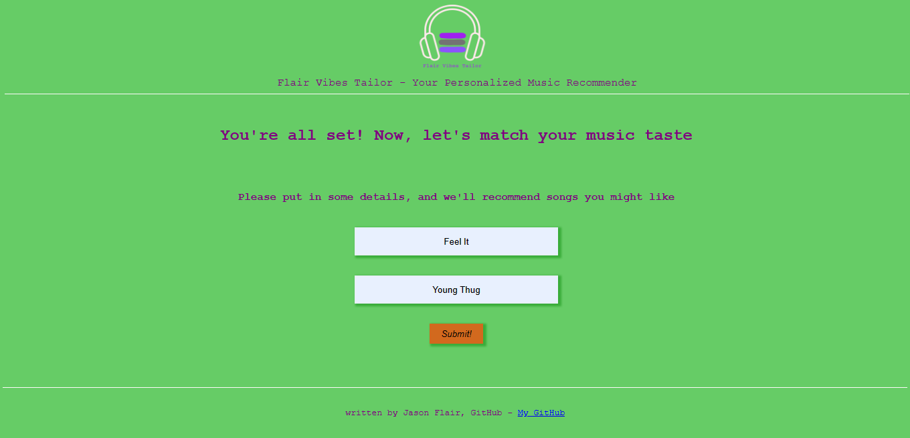
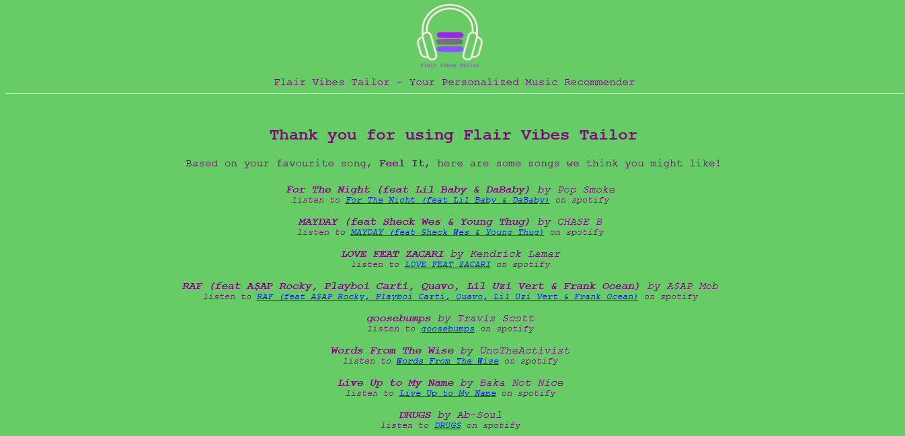

Hi there! Welcome to the Flair Vibes Tailor
Are you bored of your current music rotation, in need of new music ideas on the go, or do you simply want to discover what your music taste says you might like? Look no further than Flair Vibes Tailor! As the name suggests, our service tailors music recommendations just for you based on your current favorite song.
How It Works
Step 1: Put In Your Favourite Song's Details
Tell us what song you can't get enough of right now as well as the artiste who made the song.
Step 2: Hit The Submit button to Get Personalized Recommendations
We'll use Spotify's trusted API with carefully selected paramters to generate a list of songs tailored just for you.
Step 3: Listen and Enjoy
Check out the songs we've recommended and discover your new favourite artiste(s) or song(s)!.
Ready to Get Started?
About Flair Vibes Tailor
Flair Vibes Tailor was born out of my passion for music and the fact that it is pretty easy to get a little tired of playing the same set of songs over and over. As a music lover, I was always looking for new and exciting songs to add to my playlists. However, I found that most music recommendation algorithms were generic and didn't take into account my personal taste. That's why I decided to create Flair Vibes Tailor, a personalised music recommender that recommends similar songs based on what you submit as your favourite song as your favourite song (or your favourite song at the moment) tells a lot about what you might like to hear.
I started the development of this project as my Portfolio Project for Holberton School, but I decided to also take it very personal since it ties with my actual interests. You can check out the project repository on GitHub here.
Research for this project began around the ending of January/beginning of February, 2022 and then development started on the 10th of February, 2022. Improvements are continous with the aim to make the music recommendations get even better.
I decided to integrate spotify's API for the recommendations as spotify is arguably the best when it comes to personalised music.
The entire program for Flair Vibes Tailor was written by myself, Chukwuemelie 'Jason Flair' Obumse.
You can reach me through:
- Email - emelieobumse100@gmail.com
- Twitter - My Twitter
- LinkedIn - My LinkedIn
- GitHub - My GitHub